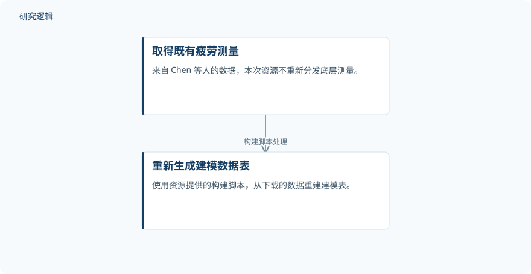

摘要解读
多轴疲劳寿命机器学习预测的经审计留一材料基准：代码、预测与不确定性区间
Audited leave-one-material-out benchmark of machine-learning models for multiaxial fatigue life prediction: code, predictions and uncertainty intervals
解读更新 2026-11-10 15:51 · 依据公开摘要整理，未核验全文细节
机器学习预测多轴疲劳寿命时，面对未测试合金的表现该如何核查？这份配套资源发布提供了数据审计、逐测试预测和不确定性区间，为检查跨材料评估提供了可追溯的入口。
文章目录
关注未测试合金，而非只看预测成绩
本次摘要介绍的是支持相关研究稿件的代码与结果资源，并非完整论文的研究摘要。其对应问题是未测试合金的多轴疲劳寿命预测，资源同时提供留一材料法（LOMO）与随机划分下各模型的逐测试预测，可供进一步核查不同评估设置。
从原始测量重建建模数据表
底层疲劳测量来自 Chen 等人的既有数据，本次发布不重新分发这些测量。用户取得该数据后，可通过发布中的构建脚本重新生成建模数据表；资源还列出全部 1170 个源文件的 SHA-256 校验值，用于确认所持数据版本一致。
发布内容还包括完整分析流程、各模型的逐测试预测、逐材料条件域的保形覆盖率、各随机种子的得分及网络超参数。这些材料提供了核查预测输出、区间覆盖与运行配置的入口，但摘要没有展开模型结构及具体计算设置。
依据摘要整理的数据重建关系


仅概括下载既有疲劳测量后，通过发布脚本重建建模数据表的关系；此图不是论文原图。
下载 SVG图示关系说明
实线表示相邻阶段的信息流，虚线表示跨阶段联系或反馈。
取得既有疲劳测量 → 重新生成建模数据表：构建脚本处理
明确报告的是审计记录与结果开放
摘要明确报告：审计后的映射将 40 个名义合金牌号对应到 41 个材料条件域，并识别出 12 条物理上不一致的记录。牌号与材料条件域并非同一统计口径；不过，摘要未解释具体拆分依据，也未说明这些异常记录如何进入后续处理。
该资源已提供预测结果与不确定性区间，但摘要没有给出误差、模型排名或覆盖率数值。因此，当前可以确认的是这些核查材料被纳入发布，不能据此断言某个模型更优，或区间已达到预期覆盖水平。
样本规模与泛化结论仍需查阅正文
仅凭摘要，无法判断疲劳测试样本总量、材料条件构成、载荷范围、模型比较细节，以及保形区间的校准与验证范围。源文件数量不能直接当作独立测试样本数；摘要未报告这些信息，也不等于论文没有开展相应分析。
阅读启发：把评估划分与区间覆盖一起看
阅读启发：对于结构疲劳与可靠性研究，可优先追问材料条件域如何界定、LOMO 与随机划分结果有何差异，以及不同域的区间覆盖是否一致。这些问题直接对应已发布的核查材料，但其答案仍须查阅配套正文和结果，不能由资源摘要提前推定。
以上为本站阅读启发与建议，不是论文已验证的结论。